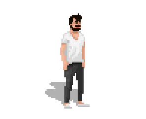
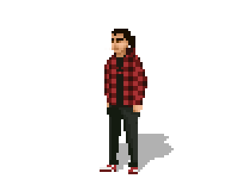

The Brothers Ma
2012-02-17 01:15:38
status: inherit
author: Bryan

Bryan
by Justin
Bryan is my older brother.
He was a primary influence on me as a gamer as well as on my game industry ambitions.
My first memories of games include marveling at his River Raid skills, taking turns playing the original Star Wars arcade game, and jealously watching him and a friend play Fantasy Empires.
His interests broadened as he focused on American history, anthropology, and ethnic studies at Wesleyan in Connecticut. Soon after graduating, he moved to China to travel, and began working with 2K Games as they set up their Shanghai studio in 2006.
He started work as a producer on 2K Australia's XCOM, later moving into design and eventually becoming Senior Designer. He led or contributed to the creative direction and design for games published on Nintendo DS, Wii, iPhone, iPad, PC, and browser.
He has just left 2K after over 5 years and is off for adventures unknown, currently working freelance and studying Interaction Design at the University of Sydney.

Justin
by Bryan
Justin is my younger brother.
His initial aspirations to the game industry consisted of becoming a Nintendo Power Game Counselor. To be fair, that sounded pretty cool when we were 6. He started designing games in Flash and RPG Maker when we were in high school.
For some reason I was never able to play games competitively against him. Whether that was a side effect of our brotherly bond, or prideful fear of the likely consequence of losing to him, who knows.
He had a small television in his bedroom which he connected to our PS1. I was jealous, as I was off at college with nothing. Then he went on to study Chinese and art at Tufts in Boston. This meant I got the television, Xbox, and PS1, which was glorious. This was quickly diminished as he soon became an early HDTV adopter.
From 2009 to 2011, he worked as a 2K Games game designer at a desk next to mine, working on console, touchscreen, and browser games. Since leaving 2K he has been working with Matthew Davis on the IGF China-nominated FTL.
Comments: